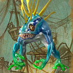

You can find the Deadmines dungeon within Westfall, Eastern Kingdoms.
The coordinates of Moonbrook building entrance are (42.3,71.2)


Route:
Map 1Map 2


Bosses:
1. Glubtok2. Helix Gearbreaker3. Foe Reaper 50004. Admiral Ripsnarl5. 'Captain' Cookie6. Vanessa VanCleef (Heroic Boss)
Quick Boss Tactics:
/i Boss will Blink teleporting to a new location. Avoid blossoms launched around room.
/i Boss will Blink teleporting to a new location. Avoid blossoms launched around room.
Heroic Differences: Fire & Frost Blossoms summon mobs when land. Avoid rotating Fire Wall.
Quick Boss Tactics:
/i Kill Oath he’s riding then Goblin. Watch out for Sticky Bomb, avoid these on ground.
/i Kill Oath he’s riding then Goblin. Watch out for Sticky Bomb, avoid these on ground.
Heroic Differences: Stay apart from each other in case get a Chest Bomb on you. Helix Crew appear above throwing Sticky Bombs at random players.
Quick Boss Tactics:
/i To activate boss kill all the other foe reapers. Boss deals physical damage, try to avoid attacks.
/i To activate boss kill all the other foe reapers. Boss deals physical damage, try to avoid attacks.
Heroic Differences: Activation of Foe Reaper causes overload in pit spawning Molten Slags to fight, jump into a Prototype Reaper to attack.
Quick Boss Tactics:
/i Avoid melee attacks. During Fog kill the Vapors. Be ready to target boss when he reappears.
/i Avoid melee attacks. During Fog kill the Vapors. Be ready to target boss when he reappears.
Heroic Differences: When boss below 10% health 3 more Vapors appear.

Quick Boss Tactics:/i Attack when boss is inside the cauldron, nuke him. Can pick up gold foods, avoid green foods.
Quick Boss Tactics:
/i You will be transported into waves of nightmares to fight your way through. When she casts Fiery Blaze to detonate explosives around ship run to a rope & swing to safety (ropes by edge of ship on floor). Calls Defias mobs to aid her.
/i You will be transported into waves of nightmares to fight your way through. When she casts Fiery Blaze to detonate explosives around ship run to a rope & swing to safety (ropes by edge of ship on floor). Calls Defias mobs to aid her.